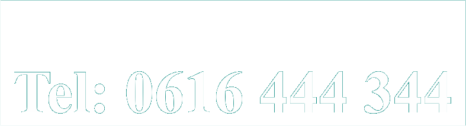
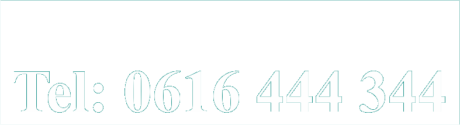
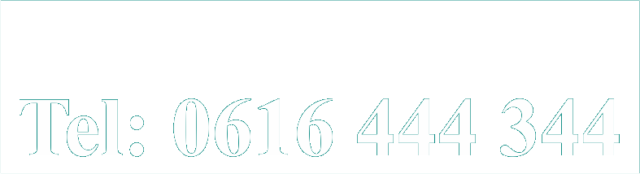

Clienten van de Centrumpraktijk zeggen: Ik ontloop niets meer en voel me sterk. Geen medicijnen meer geslikt sinds toen; ik kan gelukkig zonder. Bedankt voor de heldere gesprekken. Je handvatten komen nog dagelijks van pas. Mark - accountmanager Je denkt dat jou dat niet overkomt, maar ik was echt helemaal op. Nu is mijn balans weer terug en heb ik er gewoon weer zin in. Wat een verschil met een half jaar geleden! Ik vond de begeleiding echt heel goed. Vooral de combinatie van theorie en praktijk was perfect voor mij. Waarom heb ik dit niet al jaren geleden gedaan?! Dorien - psychologe De beste hulp die ik me maar kon wensen. Dank je wel voor alle tijd en moeite! Carla - teamleidster Dank zij jou laat ik me niet meer gek maken. M'n gezondheid is een stuk belangrijker dan de waan van de dag. Door jouw tips heeft stress steeds minder grip op me en daar heeft mijn hele gezin baat bij. Conrad - filiaalmanager Eindelijk iemand die echt weet waar hij het over heeft! Waarom zijn er daar niet meer van? Heel erg bedankt! Je hebt me fantastisch geholpen! Irene - hr manager Het was fijn om met je te praten over de dingen die me al zolang dwars zaten. Dank je wel voor je begrip en steun. Je hebt me belangrijke lessen geleerd over mijn evenwicht en grenzen, die ervoor zorgen dat ik het leven weer aan kan. Sjoukje - projectcoordinatrice Duidelijke stappen, afgerond traject, professionele begeleiding. Prima hulp! Sander - systeembeheerder Vermijden hoeft niet meer! Dankzij jou durf en kan ik het weer aan. Ik doe nu gewoon de dingen die ik leuk vind en ook al is dat soms nog spannend, ik weet dat ik het kan. Anita - financieel medewerkster Vreemd eigenlijk dat ik me zo schaamde voor m'n trillende handen. En nu ik dat niet meer doe trillen ze ook niet meer! En ik maar in m'n eentje worstelen en ploeteren... . Wat een paar goede gesprekken niet kunnen doen! Bedankt. Simon - technisch consultant Ik ben weer aan de slag en dat gaat goed. Heel goed zelfs! Ik heb nog elke dag veel aan onze gesprekken. Je hebt me geholpen om alles heel goed op een rijtje te zetten. Dat geeft me de houvast die ik nodig heb als de hele meute op me afkomt en het werk zich opstapelt. Moniek - pedagoge Het is van grote waarde geweest voor mij dat je mijn patronen en valkuilen zo goed door had. En het heeft mij erg geholpen dat het zo'n duidelijk traject was. Daardoor bleef ik de juiste stappen maken richting herstel. Ron - commercieel directeur Ik ben erg blij met het resultaat van de sessies; ik heb mijn balans weer gevonden. Ik krijg steeds meer zelfvertrouwen en durf steeds beter te zeggen wat ik vind. Dat merk ik niet alleen in mijn werk; ook op de sportclub ben ik assertiever en voel ik me meer op m'n gemak. Jeroen - sales manager Het komt me nu voor als een enge droom. Waar ik niet allemaal bang voor was! Dank! Het leven is weer de moeite waard! Je bent echt een ontzettend grote steun voor mij geweest, geweldig wat je doet. Ellen - activiteitenbegeleidster Waarom heb ik de Centrumpraktijk niet eerder gevonden?! Dat had me zoveel tijd en ellende gescheeld!!! Marian - huisarts Ik wist echt niet meer waar ik het zoeken moest toen ik bij jouw aanklopte. Godzijdank heb je me weer op mijn benen gezet. Ik ben je veel dank verschuldigd voor je inzet en betrokkenheid. Anton - grafisch ontwerper Ik ben er weer helemaal bovenop en ben je daar erg dankbaar voor. Ik heb er veel te lang mee rondgelopen, zonde van de tijd. Gelukkig heb ik de stap gezet om je te bellen. Pieter - ondernemer Dat er nog een andere manier was dan tegen de angst te vechten of er voor weg te vluchten... . Wat een gigantisch verschil. Paul - verkoper buitendienst Ik heb echt zelfvertrouwen en ik durf steeds meer mezelf te zijn! Wie had dat gedacht van Sonja! Sonja - tandartsassistente Eindelijk kan ik weer doen en laten wat ik wil. Wat is het leven een stuk gemakkelijker geworden door de sessies. Arnoud - helpdesk medewerker Ik heb zolang in angst geleefd dat ik bijna niet meer wist dat het zonder kon. Jouw hulp heeft me daar uitgehaald. Daphne - verpleegkundige Het was een erg moeilijke tijd voor mij waar uw steun en uitleg mij doorheen hebben geholpen. Ik heb mijn vertrouwen weer terug en daarmee is veel gewonnen. Ik beveel dan ook de Centrumpraktijk aan een ieder van harte aan. Dhr. J.G. - accountant Ik dacht dat ik nooit meer op zou laden, maar met jouw hulp is dat sneller gegaan dan ik voor mogelijk hield. Frans - hoofdagent Ik had er erg tegenop gezien om naar een therapeut te gaan, maar het viel me allemaal eigenlijk erg mee. Het was best wel eng eerst om een afspraak te maken, maar je was gelukkig heel aardig en je deed heel gewoon. Dat was echt wel een opluchting! De therapie was hartstikke goed en ik ga alweer een hele tijd gewoon weer naar colleges. Ik denk er vaak geeneens meer bij na! Mariette - studente Ik ben erg blij dat het niet alleen heel inzichtelijk en duidelijk was, maar ook erg praktisch. Dat heeft me veel goeds opgeleverd. Mevr. van D. - gepensioneerde onderwijzeres Geen paniek meer! Al jaren niet meer! Fantastisch! Dank je hartelijk voor alles. Maartje - inkoopster Ik rij weer dagelijks zonder problemen over de 'gevreesde' brug. Het voelt geweldig om mijn paniek overwonnen te hebben. Anne - fysiotherapeute Ik heb veel aan de therapie gehad. Soms lees ik de aantekeningen nog eens door en dat helpt me in balans te blijven. Karen - secretaresse Eindelijk praten we weer samen. En lachen we weer wat vaker. Het was heel goed voor ons om een paar sessies te doen. Jan & Annette Het kostte aardig wat moeite, maar wat wil je na zoveel jaar. Jouw methodes zijn daarbij onontbeerlijk geweest. Johan & Colette Het is een hele opluchting om het allemaal uitgesproken en helder te hebben. Wat een miscommunicatie hadden wij! Het was een belangrijke stap om te zetten en het is goed dat er beweging in is gekomen. Bedankt voor je aandacht en geduld. Marianne - moeder en manager Ik had niet gedacht dat we samen verder zouden gaan, we wisten echt niet meer wat we moesten doen. Maar de sessies hebben zoveel duidelijk gemaakt! Samen is weer echt samen! Erik & Patricia
